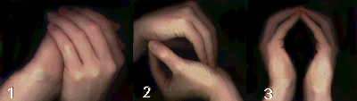
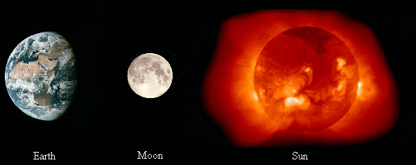

| Home � Psi Balls � Shields � Kinesis' � Astral Travel � Telepathy � Aura Vision � Books � Links |
|
|
| |
This article is the most complete/detailed description of the method I use to create psi balls. I tried to write this article for a 3 year old so no one would be confused. Forgive me for being redundent and stupid in many parts, but I just wanted to make sure I covered everything  . Also, it's written for beginners - I'm not gonna tell you how to throw or add information to them. Here it is, a complete, step-by-step procedure, for making psi balls.
. Also, it's written for beginners - I'm not gonna tell you how to throw or add information to them. Here it is, a complete, step-by-step procedure, for making psi balls.
Before you make the psi ball, you have to decide where to make it. You can make it anywhere you want. You can make it in your hands, at your third eye, across the room, or in china!
|  |
Most people use energy from somewhere else to make a psi ball. You can use your energy, but you will run out faster and get tired. You can use anything as your source of energy. For example, you can use the Earth, the Sun, the Moon, or you can use people or objects. Usually planets/stars/moons are a good choice because they have a lot of energy.
|  |
Drawing energy from your source is easy. All you have to do is visualize energy coming from your source and entering or surrounding your body. Visualizing is just like imagining or pretending, just picture it in your head. You can visualize anything you want, as long as it seems like your absorbing energy from the source. Some people close their eyes, some don't - do both and see what works for you. For example, I visualize myself standing on the Earth with energy coming from the core, through the ground, and into my body through my feet.
Now, while still drawing energy from your source, direct the energy to where your making the psi ball. Once it gets to the location, visualize the energy swirling around in the shape of a ball. For example, I visualize the energy twisting around my arms and swirling around in my hands.
To add energy, you just keep visualizing the energy entering the psi ball. There are two ways though... one, you could make the psi ball get bigger then compress it down, or two, you can make the psi ball denser and leave the size the same. If you're going to make the psi ball bigger, I suggest moving your hands apart then bring them closer together when you compress the ball. Note - you are not compressing the psi ball with your hands, you have to visualize it. Here is an example:
!!!
Step 6
Well, when it's time to get rid of the psi ball, all you have to do is let it go. That's it. Hopefully you havent grown too attached to it ... So, when it's time, release your hold and let the energy filter into the air. Just let it diffuse... and thats it!
Well, you made it. Congradulations! See, it's not that tough... this is easy stuff. If you have questions, I suggest looking at my "Questions and Answers" article in the Psi Ball catagory because I answered A LOT of questions there. Right now I'm gonna take a break, maybe in the near future I'll write an article of how to throw them and how to change their color or something... OR maybe one of you will write it for me ! Anyways... good luck and KEEP PRACTICING!!!
 ? E-mail me at
? E-mail me atpeebrain1@hotmail.com | |
| Home � Psi Balls � Shields � Kinesis' � Astral Travel � Telepathy � Aura Vision � Books � Links |
|